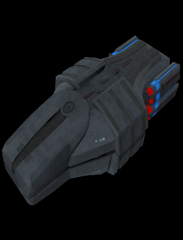

Today I will be displaying some of my new, unreleased works to the public! It's not much, as I am a terrible texture artist, but I hope you enjoy them! You can check them out here in the tabs below, or tap the "My Works" button and find it there under "3D Models". Enjoy!
Just click on the tabs below to see a screenshot!

CONSIDERATION
As always, I recommend subscribing to the mod I volunteer with up on the Steam Workshop. This allows immediate access to updates and makes it easier on us devs to get hot fixes out to you in a timely fashion. That way, you don't have to been Hirogen Hunter to find our updates.